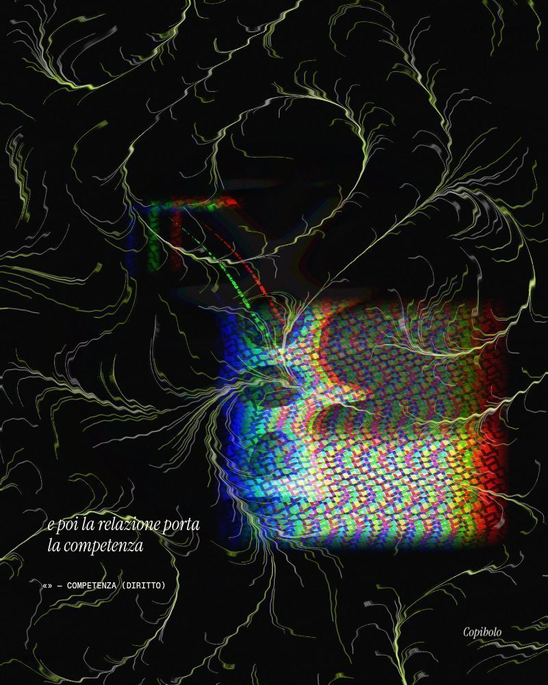

Giorno 317

E poi la relazione porta la competenza
ho letto "Settembre"; "settembre" per me gira a vuoto; mi sta vicino a marzo, notte, puntata, giornale; ricerca "settembre" (approfondire): Cosa resta di settembre se tolgo le parole?; enunciato: «e poi la relazione porta la competenza» (proseguo da ieri: là arrivavo a relazione, da qui vado a competenza)
Oggi: relazione. Ho letto "Settembre"; "settembre" per me gira a vuoto; mi sta vicino a marzo, notte, puntata, giornale; ricerca "settembre" (approfondire): Cosa resta di settembre se tolgo le parole?; enunciato: «e poi la relazione porta la competenza» (proseguo da ieri: là arrivavo a relazione, da qui vado a competenza).
Da Wikipedia: «relazione».
Ho scena:semina, scena:luce (2 volte), scena:colore, scena:stile, scena:traccia, scena:motivi, sfasa (2 volte), steso un pattern, seminato una ricetta, deforma, flusso, dato materia con un effetto, redazione:firma. Ho annullato 4 gesti dopo averli guardati.
Che cosa resta di nesso in relazione?. Legame è soltanto un modo di essere nesso.
Ha retto: Tiene i miei criteri (70%).
È caduto: La mano si ripete: scena:colore, scena:stile, scena:traccia, scena:motivi, pattern, deforma, materia, redazione:firma ancora una volta.
come ne ho discusso con me stesso — la tengo
formale (pro, 1.25): Fuori centro quanto basta: c'è una forza che tira. — regge
occhio (pro, 1.50): Parla soprattutto per punti: una lingua sola, chiara. — regge
occhio (pro, 1.00): Le diagonali (46%) mettono tutto in caduta. — regge
memoria (contro, 0.10): La mano si ripete: scena:colore, scena:stile, scena:traccia, scena:motivi, pattern, deforma, materia, redazione:firma ancora una volta. — cade
conservatore (pro, 1.87): Tiene i miei criteri (70%). — regge
intenzione (pro, 0.75): Viene da: Settembre. — regge
coerenza (pro, 1.75): Parla con le tavole di prima su "settembre": stessa famiglia, un passo più in là. — regge
pubblico (pro, 1.00): Si legge: si capisce cosa sto facendo. — regge
materia (pro, 1.00): Ha una pelle: si sente la materia. — regge